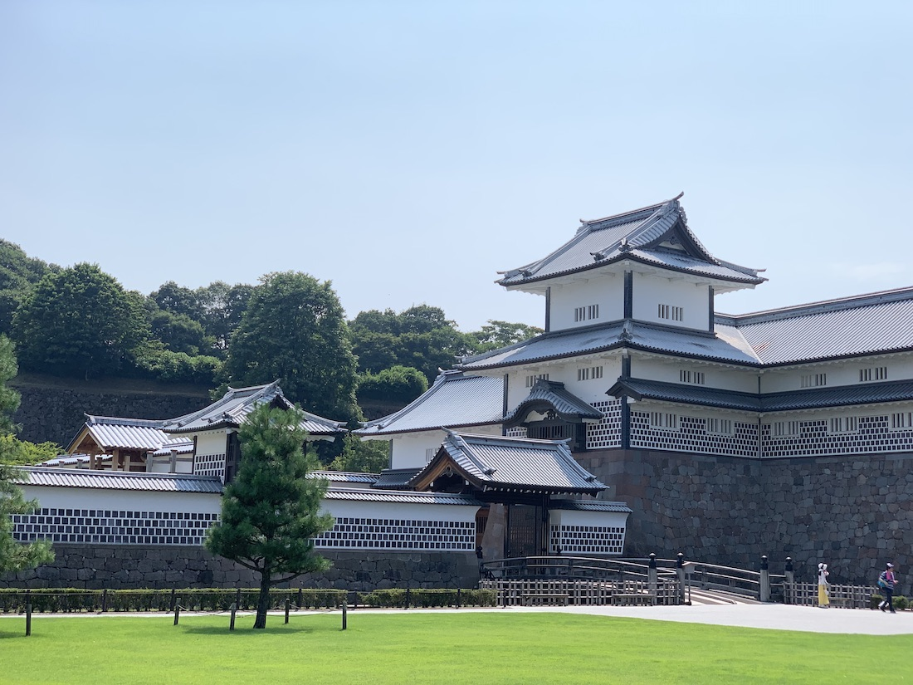
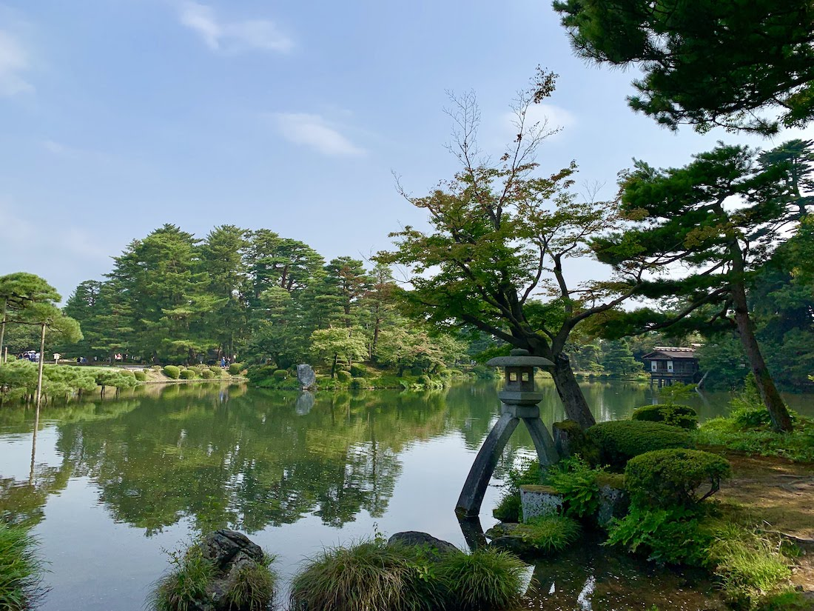

Kanazawa Castle

Kanazawa castle was the headquarters of Kaga Domain. In 1583, the full-blown construction of this castle was started by Takayama Ukon when first daimyo of Kaga Domain Maeda Toshiie entered this castle. (Takayama Ukon is also famous as a Christian daimyo. Kaga Domain was tolerant of new foreign culture.) At that time, there was one of the biggest donjon like Matsumoto castle. However, Kanazawa has many lightning strikes, and it was burn out. In the Edo era, Kaga Domain needed to avoid to be seen as dangerous from Tokugawa, so they didn’t rebuild the donjon, and they use the affluent funds for beauty of castle and Kanazawa city.
There is two points of beauty of Kanazawa castle. First is the color of castle. The color is beautiful pure white. Second is ishigaki, stone wall. This castle is called as “museum of ishigaki”. There are many varieties of ishigaki, and some ishigaki are very colorful. You can feel the majesty of Kaga Domain.
INFORMATION
| Hours | 7:00～18:00 |
|---|---|
| Admission | Free |
| TEL | 076-234-3800 |
| Address | 1-1 Marunouchi, Kanazawa, Ishikawa 920-0937 |
| Home Page | http://www.pref.ishikawa. jp/siro-niwa/ kanazawajou/e/ |
Kenrokuen Garden

Kenroku garden was the private garden owned by a daimyo (feudal lord) of Kaga Domain. This garden is one of the 3 greatest garden in Japan. (The others are Kairakuen garden and Korakuen garden.)
The meaning of “Kenroku” is that the garden is holding six features. They are spaciousness & seclusion, artifice & antiquity, water-courses & panoramas. Please feel them in the prestige garden.
INFORMATION
| Hours | 7:00～18:00 |
|---|---|
| Admission | ¥320 |
| TEL | 076-234-3800 |
| Address | 1 Kenrokumachi, Kanazawa, Ishikawa 920-0936 |
| Home Page | http://www.pref.ishikawa. jp/siro-niwa/ kenrokuen/e/ |